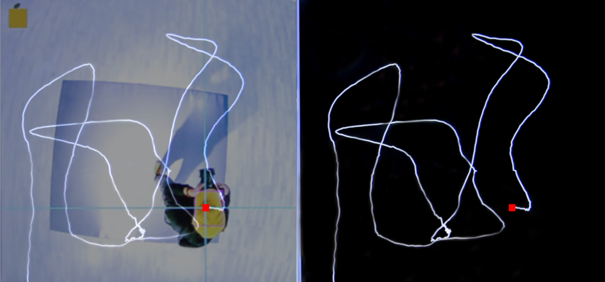
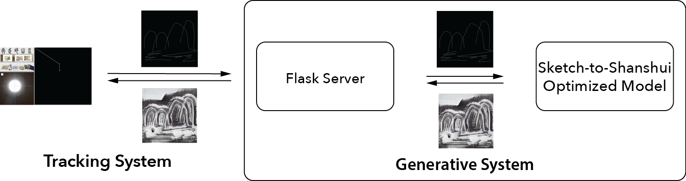
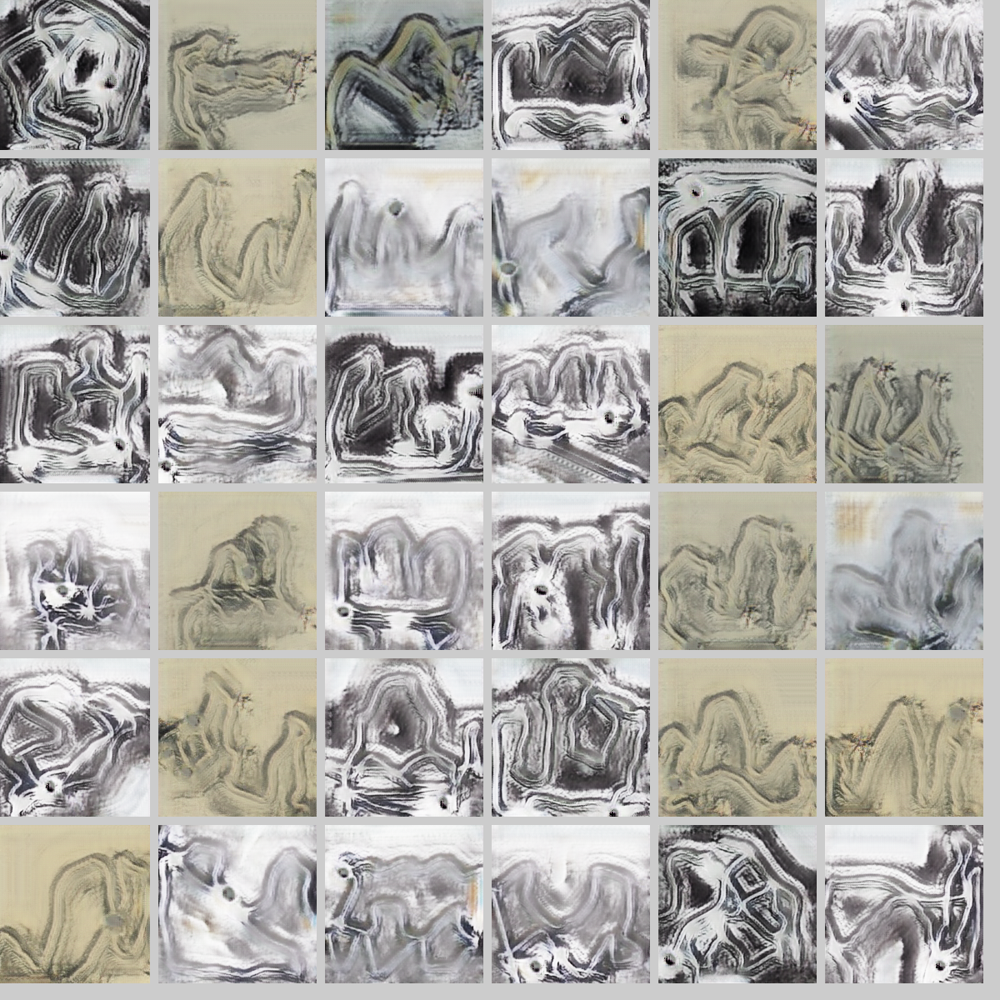

Walking Through Shanshui
Janurary 2019
Overview
“Walking through Shanshui” is an interactive installation based on AI using Generative Adversarial Networks and is dedicated to providing participants with a similar experience of creating Shanshui as in ancient times with various technologies that enable us to recreate the experience of moving through nature. Chinese Shanshui, also known as literati painting, is a type of ink brush painting that depicts the natural landscape in a semi-abstract fashion. Shanshui 山水 literally means mountain and water, and the style reflects the smoothness of water embodying the shape of the mountainous landscape in the painting. Back in their days, ancient Chinese scholar-artists (literates) traveled and immersed themselves in the great nature and after went back, they fuse their memories and present their Shanshui world on canvas.
This piece seeks to honor these traditions and experiences to create Shanshui paintings that capture the graceful movements of travelers in natural spaces, and attempts to mimic the traveling and walking experience with a simplified tracking model - walking in a room-size installation. The installation uses position tracking as input to generate Shanshui from participant's movements and to paint with a custom generative Sketch-to-Shanshui translation model and detects the participant's position in real-time and automatically traces it to generate a Shanshui painting instantly. Taking advantage of the advancement of Artificial Intelligence technologies, artist uses AI to help to generate a painting from a participant's walking experience and aims to use this project to establish a creative and collaborative AI experience, where AI captivates the imagination to enhance creativity, especially for casual participants, including younger generations, that have a passion for art without a formal training in the area.
Artist named this system "Walking Through Shanshui," not only to describe the general interaction but also referring to the origins of ancient Shanshui painting practices. With the capability of AI, we walk, travel and present related memories and experiences in the form of Chinese traditional art. Deep cultural heritage meets rapidly changing forms of art powered by technological advancements allows us to rediscover traditions and allow their essence to evolve through emerging technology while maintaining elements of both familiar and new. This opens up a new form of expression by extending the form and finesse of the artist to the curiosity of the observer, in effect making these audience an integral part of the art itself via an interactive display. This project tries to help us find the inner artist in ourselves and brings significant value by turning the observer into an artist for others to visualize their journey in real time. In other words, AI can bring art to the masses and help them express themselves seamlessly through technology.
We set up the system as a room-size enclosed interactive exhibit. On-site staff/assistants provide guidance during the live show. Only be one participant at a time can control the digital canvas and she or he will receive a yellow tracking hat from the assisting staff. Participants will first put on the hat and then walk into the interactive space to start engaging with the system. Only the hat bearer may enter the interactive stage. As the bearer moves, the system displays the real-time position-log sketch on the tracking monitor. When the participant feels ready, she or he can walk outside of the stage and hand the hat back to assisting staff for the next participant.

The tracking system consists of a webcam and a custom color tracking algorithm. Mounted to the ceiling and face towards the floor, the camera captures the top view of the entire interactive zone, which is a $2.1 \times 2.1$ meter space covered by a gray carpet. When a participant puts on the yellow hat and steps in, the system tracks the location.

The system detects the human participant's position with real-time webcam monitoring, and switches between tracking and generating mode. When the participant steps into the interactive space, the tracking system will be activated and record her or his position history. At the moment the participant walks out, the AI system will be triggered and invoke the generative machine learning model to process the sketch. The Sketch-to-Shanshui translation algorithm generates a realistic Shanshui painting from the sketch input. The generated painting displays on the TV and presents to audiences in real-time.

This project has been exhibited at Shanghai DUOLUN Museum of Modern Art for 45 days. We were documenting on-site interactions on the first day. There were more than 300 engagements and generated paintings. There were long lines of excited observers waiting, but the experience was worth the wait and they spoke highly of the interaction and overall results. We selected some highlights to describe what participants created with our AI. Overall, most observer reacted very positively. There were 9642 participants who generated paintings during the exhibition.
